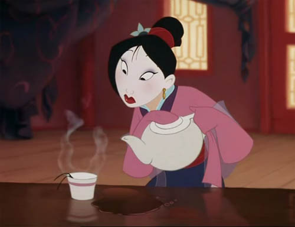

Dragon Ball Z
Dragon Ball Z Là-haut
Là-haut Mulan
MulanDans les paysages montagneux de Chine, surplombés par la Grande Muraille, les Huns, menés par leur chef Shan-Yu, envahissent en pleine nuit le pays. L’empereur prévenu, décrète la mobilisation d’un homme par famille.
I. Préface
II. Le mariage
Fa Mulan, fille unique, part en ville se préparer avec sa mère et sa grand-mère pour rencontrer la marieuse et faire ainsi honneur à sa famille. Elle arrive en retard les cheveux couverts de paille au grand mécontentement de sa mère. Mulan est immédiatement déshabillée et plongée dans une baignoire, puis elle se fait rapidement vêtir en mariée. Sa grand-mère lui donne pour l’occasion Cri-Kee, un criquet porte bonheur. Cependant, après avoir commis maladresse sur maladresse, Mulan est honnie par la marieuse. De retour chez elle, seule, elle retire son maquillage et s’interroge sur la place qu’elle doit tenir. Son père Fa Zhou la console.
III. La fuite
Mulan et son père sont interrompus par le roulement d'un tambour annonçant la conscription des hommes. Mulan s’oppose au départ de son père à la guerre, invoquant sa maladie et sa vieillesse ; celui-ci invoque la place qu'il doit tenir, et lui rappelle qu'elle doit trouver la sienne. Dans la nuit orageuse qui suit, elle se coupe les cheveux avec une épée et prend l’armure de son père puis part en direction du camp militaire où celui-ci devait être affecté. Sa famille, qui s'est rendu compte de son absence, renonce à la rattraper, sachant qu'elle serait exécutée si la supercherie était découverte. Les ancêtres de la famille Fa sortent alors de leur sommeil et confient à Mushu, un ancien gardien de la famille aujourd’hui dégradé, le soin de réveiller le grand dragon de pierre destiné à protéger Mulan. Mushu le pulvérise par inadvertance, et fait croire aux ancêtres que le dragon est bien parti aider Mulan ; lui et Cri-Kee décident alors de partir la protéger par eux-mêmes.
IV. L'entraînement
Arrivée au camp avec Mushu, Mulan sème le désordre et ne comprend pas les agissements typiquement masculins notamment ceux de Yao, Ling et Chien-Po. Pendant ce temps-là, le général Li, son fils Li Shang et le conseiller impérial Chi Fu débattent de la stratégie militaire à adopter contre les Huns. Ils décident que le général Li partira en premier afin de défendre un village et que Shang le rejoindra plus tard à ce même village pour ensuite terminer sur un col. Le général Li promeut Shang capitaine impérial, malgré l'opposition de Chi Fu, lui confie la formation des nouvelles recrues et repart rejoindre ses troupes. Shang, constatant le désordre créé par l'arrivée de Mulan, demande le nom du fauteur de trouble et tous les hommes du campement la désignent ; elle se présente sous le nom de Fa Ping. Le lendemain, Shang lance une flèche au haut d’un mât et donne pour but de la décrocher, en portant deux poids symbolisant la discipline et la force ; aucun des hommes n'y parvient. Il commence aussi à leur enseigner le combat et le tir à l'arc. Mulan, sur le point d'être chassée car trop frêle, réussit finalement à escalader le mât.

V. La désillusion
Les troupes prêtes vont vers le front. Pendant les laborieuses heures de marche, pour retrouver de la joie, les soldats chantent et pensent à une fille à aimer, ce qui met Mulan mal à l'aise. Mais cette joie est vite interrompue lorsqu'ils découvrent le village dévasté par l'armée des Huns. Le casque du général Li est retrouvé sur place, et Shang comprend que son père est mort. Shang enfonce son épée dans la terre, la surmonte du casque et se recueille un instant avec Mulan, qui comprend sa douleur. Shang décide ensuite de suivre les ordres malgré ce revers, et de rejoindre la capitale par le chemin le plus court, le col.
VI. Le combat dans les montagnes
Alors qu'ils avancent vers leur but, Mushu déclenche une des fusées par inadvertance, avertissant ainsi les Huns de leur présence. S'ensuit immédiatement une pluie de flèches contrée par les tirs de canon. Après une courte accalmie, au-delà des nuages de fumée apparaît Shan-Yu ainsi qu’une nuée de cavaliers huns chargeant derrière lui. Yao, sur l'ordre de Shang, se prépare à tirer sur Shan-Yu mais Mulan s'élance et prend le canon puis tire sur un pan de la montagne provoquant une avalanche emportant tout le monde. Dans la coulée, Mushu sauve Cri-Kee et Mulan sauve Shang, puis eux-mêmes sont sauvés par la flèche attachée à une corde lancée par Yao.

VII. La révélation
Mulan a été blessée par Shan-Yu au moment de l'attaque, et elle est soignée, mais le médecin découvre qu'elle est une femme et la dénonce à Shang. La punition prévue pour Mulan est la mort mais Shang décide de l'épargner en raison du principe d’une vie pour une vie, et ce malgré les contestations de Chi Fu..

VIII. Le combat au palais
Plus tard, Shan-Yu et quelques-uns de ses hommes s'extirpent de la neige. De retour à la capitale, la victoire est célébrée par la population dans l'artère principale qui conduit au palais impérial. Mulan essaie en vain de prévenir Shang que les Huns ont infiltré le palais : celui-ci ne la croit pas. Alors que Shang arrive devant l'empereur, les hommes de Shan-Yu enlèvent ce dernier et s'enferment dans le palais. Yao, Ling et Chien-Po se travestissent en femmes, et accompagnent Mulan et Shang à l'assaut des murs du palais. Ils se débarrassent des quelques Huns de garde, tandis que Mushu déplume l'épervier de Shan-Yu, pour éviter qu'il ne donne l'alerte. Shang sauve l'empereur, et commence un combat contre Shan Yu tandis que ses hommes exfiltrent le souverain. Mais il est moins fort que Shan-Yu, et après avoir été vaincu, est secouru par Mulan, qui attire Shan-Yu sur les toits du palais. Mushu envoie une fusée de feu d'artifice qui explose contre Shan-Yu.
IX. Le dénouement
L’empereur, pour la remercier, s’abaisse devant Mulan ainsi que tout le peuple. Il lui propose de devenir sa conseillère à la place de Chi Fu, mais Mulan souhaite retrouver sa famille. Le souverain lui remet l'épée de Shan-Yu ainsi qu’un médaillon prouvant sa gratitude, et conseille ensuite à Shang de ne pas hésiter à s'intéresser à elle. Après les retrouvailles avec son père, Mulan voit arriver Shang, venu lui déclarer sa flamme. Mushu redevient l'un des gardiens de la famille Fa.